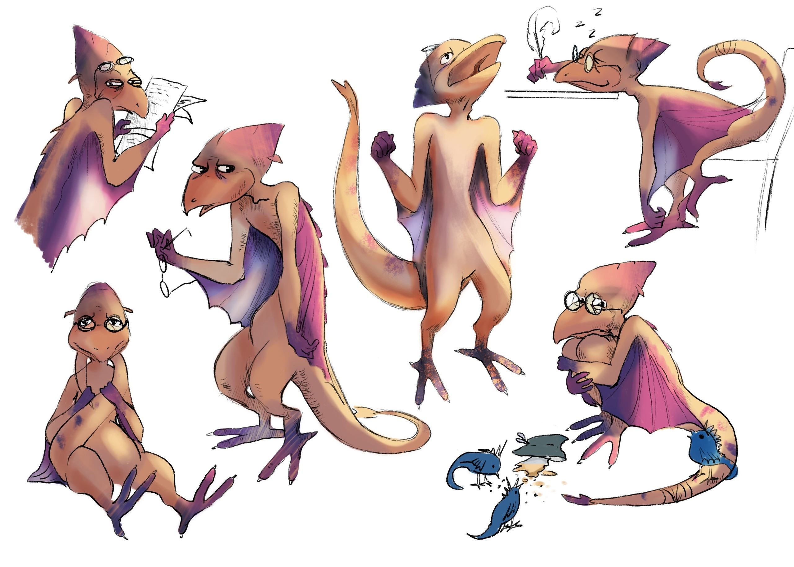

 Анимационный сериал про детей дракончиков, которые живут в мире полностью наполненном драконами из разных сред и при этом несмотря на все отличия они существуют вместе и обустраивают свою Драконью жизнь.
Истории полные магического реализма раскрывают не только харрактеры героев но и показывают каким хрупким является наш мир и как мы можем его сохранить.
>Так же помимо анимационного сериала мы пишем и предлагаем вам почитать сказки про Дракончиков. Сказки
Мы занимаемся не только анимацией, танцами, актерским мастреством, музыкой драматургией, и нам есть чем поделиться и о что вложить в наши сюжеты, которые мы собираемся и отыгрываем вживую, прежде чем создавать в 3д.
Для развития своих анимационных проектов мы запускаем онлайн обучение! Вы можете выбрать понравившийся курс и мы свяжемся с вами!
4 дракончика строили дом. Дом с водой, дом с огнем, с землей и воздухом... Как понять что в доме все есть...? Воздух точно есть? Вроде бы есть. "Не чувствую... Когда качаюсь на качеле чувствую, а так заходишь в дом и нет в нем, воздуха..." , "Ну подожди... ты же дышишь, значит воздух есть...!" , "Ну я и на улице улице дышу! А есть ли у меня воздух в доме, я же не знаю... Нет, я не могу с вами жить без воздуха, Извините друзья..." сказал воздушный дракончик... "Так ну а что если мы будем раскачивать наш дом как качелю...?" Предложил огненный... И они это сделали...! "Но мои рыбки, смотрите, что теперь с моими рыбками..? Возмутилась водный дракончик - рыбки бились о края домика... и тогда их решили тоже привязать, каждую за хвост и так что бы радиус рыбьего проводка не дотягивался до стенок дома и они о них не бились... Хорошо что это были дети дракончики, и рыбки были искуствеными, ну вы знаете - игрушечными, так что ни одна живая рыбка не пострадала при строительстве дома дракончиков!
4 дракончика пришли к волшебнику, что бы он рассказал им каким должен быть Мир. Они точно знали, что он им это расскажет, потому что он когда то его сотворил... И пока они слушали у волшебника о сотворении мира он отошел и начал продолжать его творить. Что же было делать....? слушать дальше стул и шкаф....? А волшебник решил начать свой рассказ про мир с самых Азов.... или пойти и вместе с ним его создавать...? а так как это были дети дракончики, то конечно же они бросили слушать лекцию... и пошли его создавать...! И так они возились с миром весь день...! и вот когда им уже пора было возращаться домой один из дракончиков сказал.. кажется я понял... сегодня мы не успеем создать мир... и тогда другой дракончик сказал... да, сегодня мир не получится сделать... Волшебник посмотрел на них, ему было жаль расставаться с дракончиками, но им уже пора было уходить... но вы возвращайтесь, вместе доделаем.. Все же он был рад то они пришли, хоть и не дослушали его лекцию до конца...